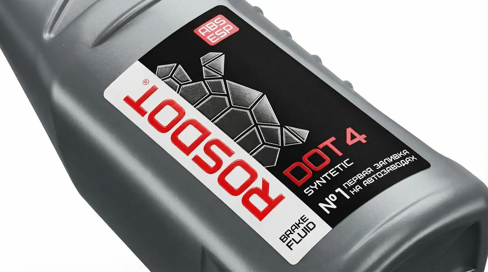

Возможности производства
Технологические решения под любые формы тары
Специфика упаковки автохимии:
Автомобильные жидкости часто разливаются в канистры сложных геометрических форм, которые могут деформироваться при изменении давления и температуры.
- Эластичные пленки: Используем полиэтилен (PE), который сжимается и расширяется вместе с канистрой без образования "морщин" и разрывов.
- Многослойные этикетки (Peel-off): Изготавливаем этикетки-книжки в 2 или 3 слоя. Идеально для размещения инструкций и мер предосторожности на нескольких языках.
- Высокоточная высечка: Создаем ножи индивидуальной формы, чтобы этикетка идеально облегала ручку или скосы вашей фирменной канистры.
- Яркие дизайны: Совмещение флексопечати, металлизированных пленок и холодного тиснения для привлечения внимания автомобилистов.

Чек-лист (PDF)
7 критических ошибок при заказе этикеток для автохимии
Скачайте бесплатный PDF-файл, который убережет вас от слива бюджета. Узнайте, как избежать отклеивания этикетки от канистр ПНД, разъедания краски маслами и проблем с деформацией тары.
✓ Чек-лист успешно отправлен на вашу почту!
Частые вопросы
Отвечают технологи Типографии РОСТ
Выдержит ли этикетка попадание моторного масла?
Да. Мы используем специальные полипропиленовые пленки и высокопрочную защитную ламинацию (или лак), которые предотвращают впитывание масел, бензина, антифризов и других агрессивных ГСМ. Дизайн останется безупречным.
Почему обычная этикетка часто отклеивается от канистр?
Пластиковые канистры для масел обычно делают из пластика ПНД (HDPE). Это шероховатый материал с низкой поверхностной энергией. Стандартный акриловый клей на нем не держится. Для такой тары мы применяем особый усиленный (каучуковый) клей с высоким уровнем первичного схватывания.
Можно ли напечатать многостраничную этикетку-книжку?
Да, мы изготавливаем многослойные этикетки (peel-off). Это идеальное решение для автохимии, когда на небольшой упаковке нужно разместить подробную инструкцию по применению, составы и предупреждения об опасности на нескольких языках.
Как защитить моторное масло от подделок?
Мы предлагаем комплексную защиту: использование саморазрушающихся материалов (защита от вскрытия канистры), печать микрошрифтов, нанесение уникальных голографических элементов фольгой и внедрение QR-кодов для систем проверки подлинности.